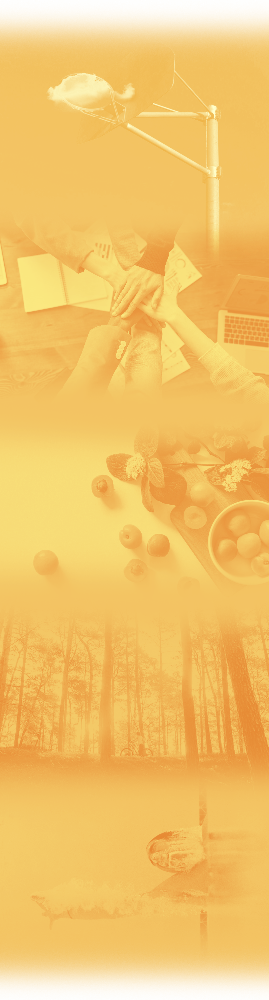
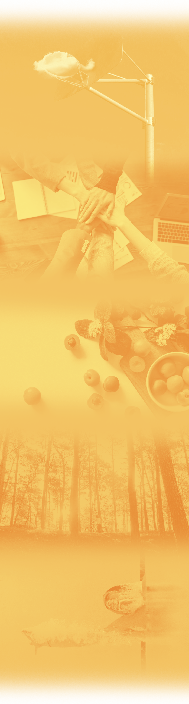
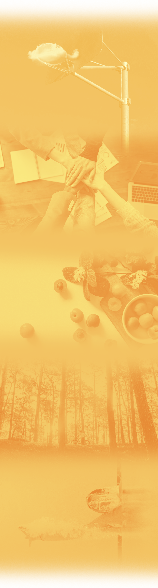

HOME
NUESTROS PILARES
ACTIVIDADES
TIENDA
BLOG

Estímulo
Estimulo a los mecanismos mentales de la
voluntad, y autoestima, valorizando el trabajo
colectivo.
Inclusión
Potenciar el concepto de inclusión,
en cada actividad con los niños,
alumnos o padres.
Salud Preventiva
Asegurar la presencia permanente de los
conceptos de salud preventiva, mediante
actividades de alimentación saludable, y
prevención en temas como alcoholismo,
tabaquismo y drogadicción.
Concientización
Exhaltación de conciencia ecologica,
ambiental, social y mental,
instrumentando actividades que
permitan la vivencia de estos valores en
alumnos, familiares y allegados.
Resiliencia
Aprovechar las instancias deportivas como
desarrolladoras de la resiliencia personal y
colectiva.

 
